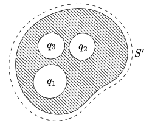
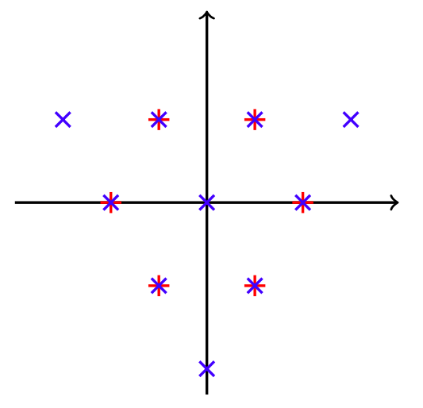

On this page, you can find notes and handouts for various courses I took, and now teach, as part of the Mathematical Tripos at Cambridge.
Part IB Electromagnetism Handouts
From 2020 to 2023, I supervised the Part IB Electromagnetism course. This course is an introduction to Maxwell's theory of electromagnetism, focussing on electrostatics, magnetostatics, induction, electromagnetic radiation and some relativistic aspects of electromagnetism. Here is a short revision handout comparing the solution of electrostatic problems with magnetostatic problems.
1. Solving electrostatics vs magnetostatics
 Part IB Complex Analysis Handouts
Part IB Complex Analysis Handouts
In 2021 and 2023, I supervised the Part IB Complex Analysis course. This course is an introduction to complex analysis, covering complex differentiation and the Cauchy-Riemann equations, the basic integral theorems of complex analysis, analytic continuation, residue calculus, and some more advanced topics (including Rouche's theorem). Here is a sheet of bonus questions to go alongside the examples sheets.
1. Bonus complex analysis questions
 Part III Symmetries, Fields and Particles Handouts
Course theme music: Symmetry, by Klangkarussell
From 2020 to 2023, I was one of the examples class tutors for the Part III Symmetries, Fields and Particles course. This course is an introduction to Lie group theory and its applications in particle physics. Here are handouts on some selected topics from the course:
1. Introduction to symmetry in field theories
2. Elementary aspects of group theory
3. Manifolds
4. Symmetries in quantum mechanics (non-examinable)
5. Lie algebras from Lie groups
6. Summary slides for (an old version of) Sheet 4
Parts II and III Revision Notes
When I was revising courses I took in Parts II and III, I made some typed revision notes, which are available below. Some are complete with figures; some require adding your own.
Part II
1. Applications of Quantum Mechanics
2. Asymptotic Methods
3. Classical Dynamics
4. Dynamical Systems
5. Fluid Dynamics II
6. Quantum Information and Computation
Part III
1. Quantum Field Theory
2. Symmetries, Fields and Particles
3. General Relativity
4. Quantum Computation
5. The Standard Model
6. Numerical Solution of Differential Equations
7. Classical and Quantum Solitons